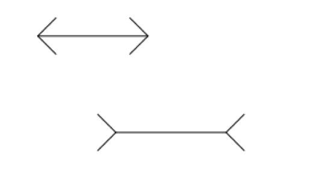
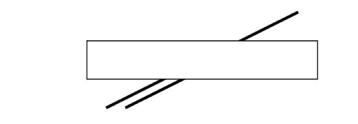
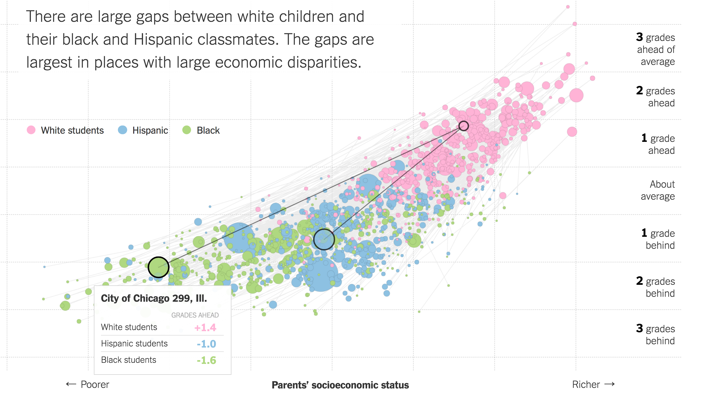

Practical Theory for Data Visualization
Applied Data Analytics
Data Viz is Great
In Brief
Anscombe's Quartet

Anscombe's Quartet

Anscombe's Quartet

Keeling Curve

We were witnessing for the first time nature's withdrawing of C02 from the air for plant growthduring the summer, and returning it each suceeding winter.
-- Charles Keeling
Keeling Curve

Keeling Curve

The eye and the visual cortex form a massively parallel processor that provides the highest bandwidth channel into human cognitive centers-- Colin Ware

Memory & Recall

TL;DR: Data Viz Is Great for:
- Exploratory Data Analysis
- Communicating Data
- Absorbing Lots of Data Quickly
- Making Data Memorable
DataViz is Hard
Because Your Eyes are Broken
Muller-Lyer
From: "39 Studies About Data Visualization"
Poggendorf Illusion



And then there's the dress...
So Theory Is Important
And Will Make Your Visualizations Better


So What is This?
Source: NYTimes


But subject to crowding.


More Practical Theory: